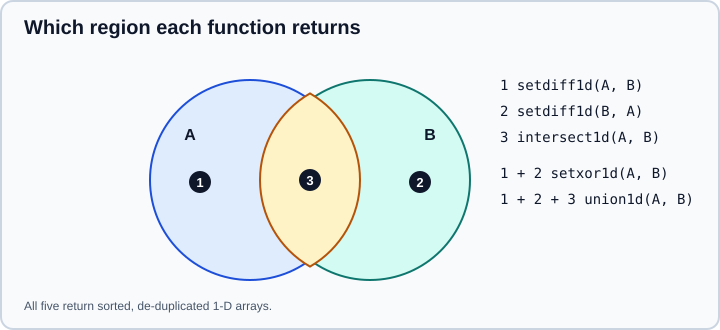

Set Operations
|
This content was generated with the assistance of AI and should be verified against the official documentation before being relied on in production. |
Questions such as "which customers appear in both files", "which ids are new", "how many distinct labels are there" and
"which rows are not in the blacklist" are set problems. NumPy answers them with a small group of functions under the
heading "Set routines": unique and its array API cousins, four binary operations on 1-D arrays, and the membership
test isin. They work on arrays rather than on Python set objects, so they vectorise, handle millions of elements and
accept every dtype that can be ordered or hashed.
This page targets NumPy 2.5, as checked against the official documentation in October 2026. Examples target Python 3.13 or 3.14 and were run on Python 3.13. Every code block was run with NumPy 2.5.4 and the printed output is real. Related pages in this part: NumPy overview, Sorting, Searching & Counting (the sort-based algorithms behind most of these functions), Advanced & Boolean Indexing and Migrating to NumPy 2.x.
The one-page map

In the figure, marker 1 is the part of A that is not in B, marker 2 the part of B that is not in A, and marker 3
the overlap. intersect1d returns marker 3, union1d returns all three regions, setxor1d returns markers 1 and 2
together (the symmetric difference), and setdiff1d(A, B) returns marker 1. All of them return 1-D, sorted arrays
without duplicates, whatever the shape of the inputs.
np.unique
np.unique(ar) flattens the input, removes duplicates and returns the sorted distinct values. Three optional outputs
come back as a tuple, always in this order: the indices of the first occurrence of each value, the inverse
indices that rebuild the original from the unique values, and the counts.
import numpy as np
a = np.array([3, 1, 2, 3, 1])
print(np.unique(a))
u, idx, inv, cnt = np.unique(
a, return_index=True, return_inverse=True, return_counts=True
)
print(u, idx, inv, cnt)
print(u[inv])[1 2 3] [1 2 3] [1 2 0] [2 0 1 2 0] [2 1 2] [3 1 2 3 1]
Source: numpy.unique
u[inv] reconstructs the input exactly, which is what makes return_inverse a general-purpose "factorise" tool: it
turns arbitrary labels into small integer codes. The pandas equivalents are pd.factorize and categorical dtypes; see
Categorical Data.
Unique rows and columns with axis
By default the array is flattened. With axis=0 the rows are treated as items, which is the way to deduplicate records
held in a 2-D array, and with axis=1 the columns are.
m = np.array([[1, 2], [1, 2], [3, 4]])
print(np.unique(m, axis=0))
print(np.unique(m))[[1 2] [3 4]] [1 2 3 4]
Source: numpy.unique
For axis other than None, NumPy views each sub-array as one compound item, so it is slower than the flat case and
the sub-arrays are compared lexicographically. For floating-point records that is exact equality, not closeness; if
values may differ by rounding noise, round them first. With axis=None and multi-dimensional input, the inverse has the
shape of the input (a NumPy 2.0 change, documented so that np.take(unique, inverse, axis=axis) rebuilds the input),
whereas with axis=0 it is a 1-D array with one entry per row.
NaN handling
By default (equal_nan=True) all NaN values are considered equal and collapse into a single NaN at the end of the
result. With equal_nan=False every NaN is kept as a separate value, because NaN is not equal to itself.
x = np.array([1.0, np.nan, np.nan, 2.0])
print(np.unique(x))
print(np.unique(x, equal_nan=False))[ 1. 2. nan] [ 1. 2. nan nan]
Source: numpy.unique
Sorted or not, and the hash-based algorithm
Historically unique sorted the data and then kept the first of each run. Since NumPy 2.3 it tries to use a hash
table instead for certain dtypes, which is faster, and it exposes a sorted parameter: with sorted=False the values
come back in the order they were found, and the documentation adds that elements "may be sorted in practice" even then,
so no order may be relied on. The 2.4 release notes report the hash-based algorithm extended to string dtypes, with an order
of magnitude speed-up on very large string arrays. np.unique with the default sorted=True still returns sorted
output; code that never asked for sorting gets the biggest benefit.
print(np.unique(np.array([3, 1, 3, 2]), sorted=False))
print(np.unique_values(np.array([3, 1, 3, 2])))[2 1 3] [2 1 3]
Source: numpy.unique and NumPy 2.3.0 release notes
The order printed above comes from the hash table, can differ between machines and releases, and is not a feature.
The unique_* functions
NumPy 2.0 added four functions defined by the array API standard, each with a fixed set of outputs and a named tuple
result: unique_values, unique_counts, unique_inverse and unique_all.
print(np.unique_counts(np.array([3, 1, 3, 2])))
print(np.unique_inverse(np.array([3, 1, 3, 2])))
print(np.unique_all(np.array([3, 1, 3, 2]))._fields)UniqueCountsResult(values=array([1, 2, 3]), counts=array([1, 1, 2]))
UniqueInverseResult(values=array([1, 2, 3]), inverse_indices=array([2, 0, 2, 1]))
('values', 'indices', 'inverse_indices', 'counts')
Source: numpy.unique_all
They never promised sorted output. The NumPy 2.3 release notes say that unique_values may now return unsorted data, after
having happened to be sorted since 2.0, and that where results are sorted this may change in later releases. They are
documented as equivalent to np.unique with equal_nan=False, so each NaN stays a separate value. Use them when you also write code against
other array libraries; otherwise np.unique with its keyword options is equivalent and more flexible.
Binary set functions
A = np.array([1, 2, 3, 4, 5, 3])
B = np.array([3, 4, 6, 3])
print(np.intersect1d(A, B))
print(np.intersect1d(A, B, return_indices=True))
print(np.union1d(A, B))
print(np.setdiff1d(A, B))
print(np.setxor1d(A, B))[3 4] (array([3, 4]), array([2, 3]), array([0, 1])) [1 2 3 4 5 6] [1 2 5] [1 2 5 6]
Source: NumPy manual: Set routines
-
np.intersect1d(a, b, assume_unique=False, return_indices=False)returns the sorted common values. Withreturn_indices=Trueit adds the indices of the first occurrences in each input. -
np.union1d(a, b)isnp.unique(np.concatenatea, b). -
np.setdiff1d(a, b, assume_unique=False)returns the sorted unique values ofathat are not inb. It is not symmetric. -
np.setxor1d(a, b, assume_unique=False)returns the sorted unique values that are in exactly one of the two.
All four flatten their inputs. They are designed for 1-D data; for 2-D rows use np.unique(axis=0) on a combined array,
or compare structured views.
Intersecting or uniting more than two arrays
The functions take exactly two inputs. Reduce over a list for more, and use unique over a concatenation for a union
of many.
from functools import reduce
sets = [np.array([1, 2, 3, 4]), np.array([2, 3, 4, 5]), np.array([3, 4, 9])]
print(reduce(np.intersect1d, sets))
print(np.unique(np.concatenate(sets)))[3 4] [1 2 3 4 5 9]
Source: numpy.intersect1d
Membership with isin
np.isin(element, test_elements) answers "is each element of the first array in the second?" and returns a Boolean array
with the shape of element. It is the NumPy counterpart of the Python in operator, applied element by element, and
the vectorised replacement for a loop or a list comprehension over x in some_list.
A = np.array([1, 2, 3, 4, 5, 3])
B = np.array([3, 4, 6, 3])
print(np.isin(A, B))
print(np.isin(A, B, invert=True))
print(A[np.isin(A, B, invert=True)])
print(np.isin(np.array([[1, 2], [3, 9]]), [2, 9]))
print(np.isin(5, [5, 6]))[False False True True False True] [ True True False False True False] [1 2 5] [[False True] [False True]] True
Source: numpy.isin
Points to know:
-
invert=Trueis the documented, faster equivalent of~np.isin(a, b). -
test_elementsis flattened. It must be array-like: a Pythonsetis converted to a 0-d object array, sonp.isin(a, {1, 2})does not do what it appears to; convert withlist(s)ornp.fromiterfirst. -
NaN is never "in" a collection, because
nan == nanis false, sonp.isin(np.nan, [np.nan])isFalseand rows with missing keys are never matched. Remove or encode NaN before the lookup if you want them to match. -
kindchooses the algorithm without changing the result:'sort'is mergesort-based and needs memory of about six times the size of both inputs;'table'uses a lookup table like a counting sort, only for Boolean and integer arrays, and needs memory of the size ofelementplus the range (max minus min) oftest_elements. The defaultNonepicks the table when it would fit in that memory budget. Passkind='table'deliberately for integer ids with a modest range, orkind='sort'when the range is huge. -
assume_unique=Truecan speed up the sort method but has no effect when the table is chosen.
For a whole DataFrame column, Series.isin in pandas applies the same idea.
assume_unique, and when it silently gives wrong answers
intersect1d, setdiff1d, setxor1d and isin accept assume_unique=True to skip an internal de-duplication. It is a
promise, not a check. If either input does contain duplicates, the result is not an error, only wrong.
x = np.array([1, 2, 2, 3])
y = np.array([2, 2, 3])
print(np.intersect1d(x, y))
print(np.intersect1d(x, y, assume_unique=True))
print(np.setdiff1d([1, 2, 2, 3], [3]))
print(np.setdiff1d([1, 2, 2, 3], [3], assume_unique=True))[2 3] [2 2 2 3] [1 2] [1 2 2]
Source: numpy.intersect1d
The wrong-looking outputs are the documented consequence of the promise being broken. Use the flag only when uniqueness
is guaranteed by construction (the arrays came out of np.unique, or they are primary keys), and benchmark first,
because the saving is only the cost of one sort per input.
Patterns
Group sums with the inverse
return_inverse gives each element an integer group code, and np.bincount with weights= turns the codes into group
sums without a Python loop.
labels = np.array(["x", "y", "x", "z", "y"])
vals = np.array([1.0, 2.0, 3.0, 4.0, 5.0])
ul, inv = np.unique(labels, return_inverse=True)
print(ul, np.bincount(inv, weights=vals))['x' 'y' 'z'] [4. 7. 4.]
Source: numpy.unique
For labelled aggregation with named results, groupby in pandas is usually
clearer, but this pattern is the foundation of many fast kernels.
Filtering a list of ids
ids = np.array([10, 20, 30, 40])
keep = [20, 40]
print(ids[np.isin(ids, keep)])
print(set(A.tolist()) & set(B.tolist()))[20 40]
{3, 4}
Source: numpy.isin
Python’s own set is a good choice for a few thousand hashable Python objects and for membership tests that are repeated
one at a time; NumPy functions win when the data is already an array, when it is large, or when the answer is needed
as a Boolean mask in array form. Converting back and forth with tolist() costs more than the operation itself on
large arrays.
Pitfalls and what changed
-
np.in1dno longer exists. It was deprecated in NumPy 2.0 and removed in 2.4; usenp.isin, which also keeps the shape of the first argument. Code and tutorials written for NumPy 1.x often still use it. -
Do not depend on sorted output from the
unique_*functions or fromnp.unique(sorted=False). -
NaN:
uniquemerges NaNs by default but theunique_*functions do not,isinandintersect1dnever match them, andunion1dmerges them into one. -
assume_unique=Truewith duplicates returns wrong answers without warning. -
A Python
setargument toisinis not iterated; pass a list or an array. -
Floating-point keys are compared exactly, so use integer ids or rounded values for matching.
-
All binary functions flatten their arguments and return 1-D results.